Внутренний стандарт дома
База оформления
Форматы рам, подставок и сборки инструментов, снятые с готовых лотов. 12 категорий, правила подбора рамы, паспарту и второго элемента.
17_stargift/img_framing
Что общего у всех категорий
Четыре правила
1
Экспонат почти никогда не идёт один
Если предмет сам по себе не объясняет, кто это и откуда, в раму добавляется второй элемент: портрет героя, постер фильма, обложка, кадр с матча. Документ, письмо, книга, сценарий, журнал и карточка идут парой практически всегда. Фотография и футболка обычно самодостаточны. Критерий один: гость должен понять экспонат, не читая подпись.
2
Цвет паспарту берётся у предмета
Бордовый — тёплые и красные кадры. Зелёный — жёлтые, природные, ретро-ТВ. Тёмно-синий — документы, наука, космос, чёрно-белая хроника. Угольный — военное и современное кино. Красный — культовое кино и советская эпоха. Для клубной вещи паспарту берёт клубные цвета.
3
Рама попадает в эпоху
Резное золото и багет с орнаментом — XIX век и раньше. Матовое серебро и брашированный металл — космос, наука, XX век. Красное дерево — политика и классика. Серый дуб — военное кино и современность. Чёрное и венге — рок и современный спорт. Один и тот же документ в золотом багете и в сером дубе читается как разные вещи.
4
Накладку покупаем — инструмент подбираем
У гитар и барабанов подписан не инструмент, а съёмная часть: пикгард или пластик. Инструмент дом подбирает под неё по цвету и типу, и это отдельное решение, а не техническая сборка.
Фотографии и постеры
8 форматов
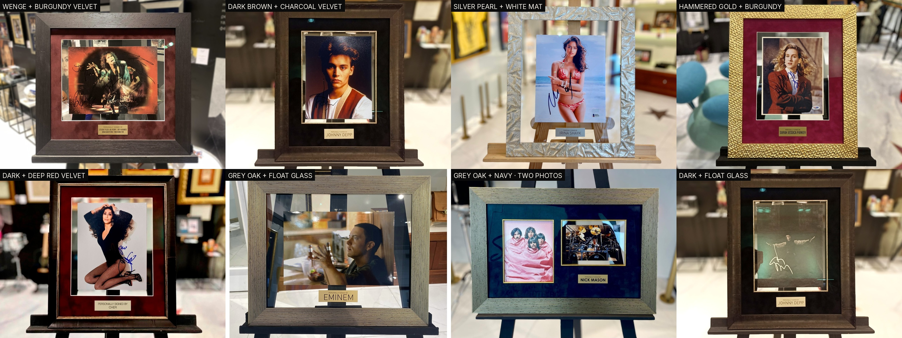
Самодостаточный экспонат: кадр объясняет себя сам, второй элемент не нужен. Работает и обратный ход — два кадра в одной раме, когда хочется показать героя и его сцену.
Бархат
бордо · уголь · красный · синий
Особые
перламутровое серебро, кованое золото, «парящее стекло»
Табличка
PERSONALLY SIGNED BY
Документы, письма, журналы
8 форматов
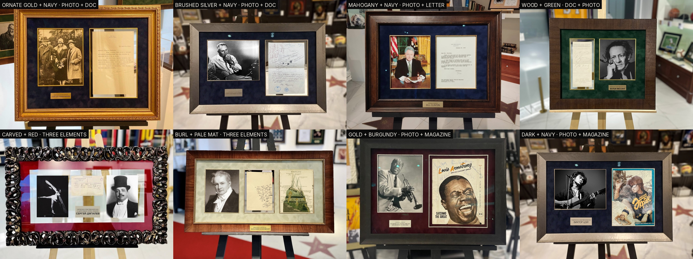
Здесь второй элемент обязателен: документ без портрета не читается. Портрет может стоять слева или справа; для крупных фигур — триптих: портрет, документ и третий предмет эпохи.
Рама по эпохе
резное золото — XIX век · серебро — наука и космос · красное дерево — политика
Паспарту
синий — основной регистр, зелёный и красный — исключения
Табличка
русская для русских героев
Киносценарии
6 форматов
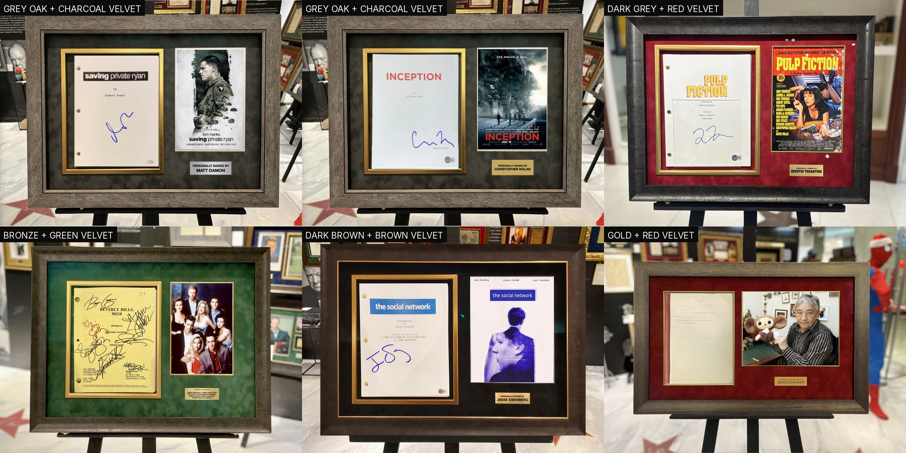
Формат жёсткий: слева титульный лист в собственном золотом багете, справа постер фильма. Латунные брадсы переплёта видны и не убираются — это признак настоящего съёмочного экземпляра.
Военное кино
серый дуб + угольный бархат
Культовое кино 90-х
тёмно-серая рама + красный
Сериалы и ретро-ТВ
бронза + зелёный
Пластинки
3 формата
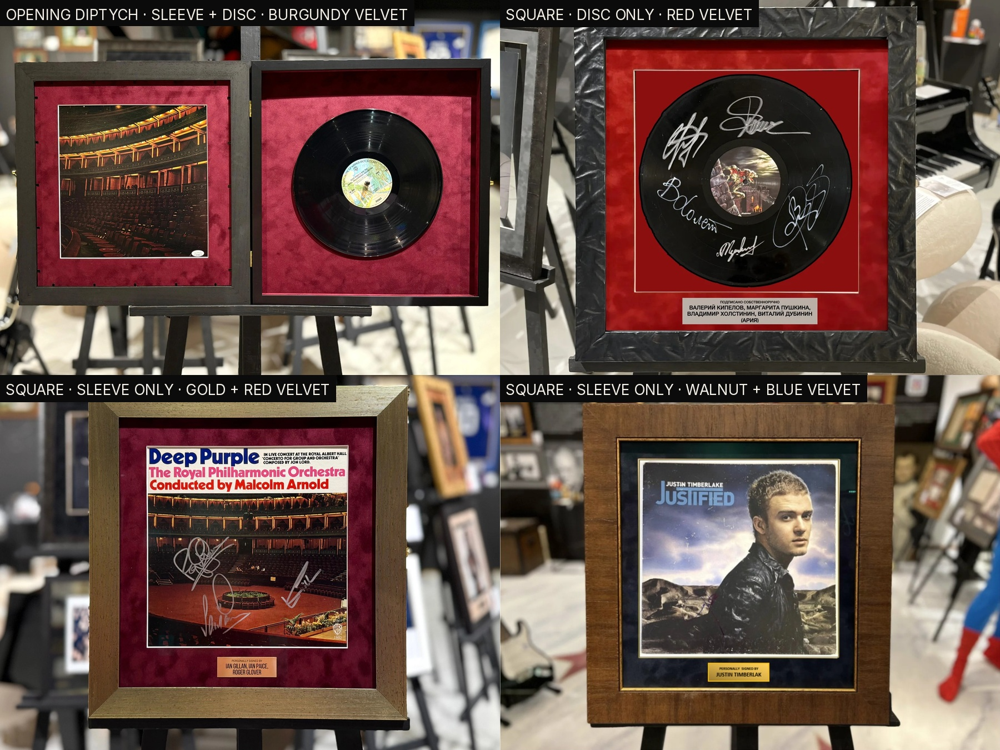
Главный формат — раскрывающийся диптих на латунных петлях: закрытым он показывает конверт, открытым — конверт и сам диск в глубокой нише. Если подписан только винил, берём квадрат с диском на красном бархате.
Диптих
бордовый бархат в обеих панелях
Только диск
чёрная фактурная рама + красный
Только конверт
золото + бордо или орех + синий
Гитары
накладка → инструмент
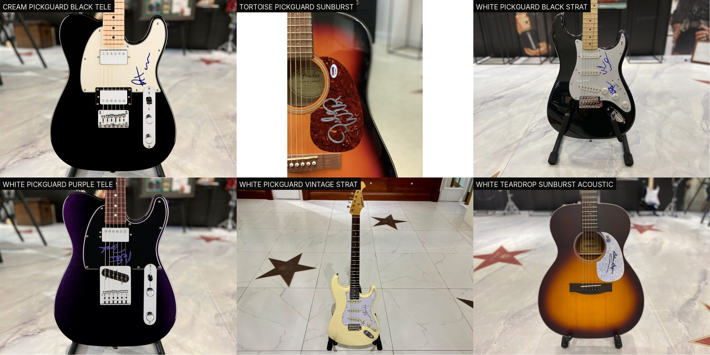
Дом покупает подписанную накладку, а гитару подбирает под неё. Белая и кремовая накладка — чёрный Stratocaster или Telecaster, реже винтажно-белый. Черепаховая и белая «капля» — санбёрст-акустика.
Подача
чёрная напольная стойка, съёмка в зале
Без рамы
инструмент показываем целиком
Заказные
пурпурный «спарклевый» Telecaster под белую накладку
Барабаны
пластик → малый барабан
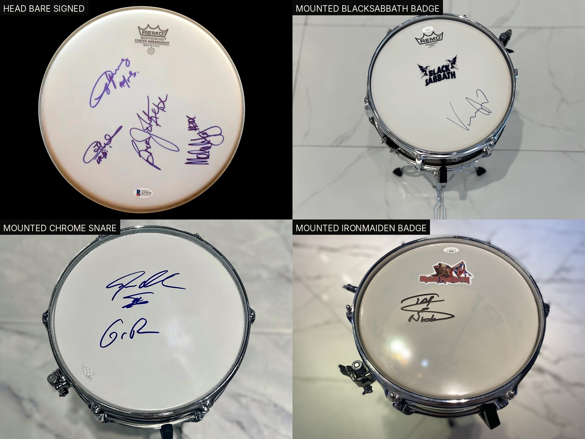
Та же логика: покупается подписанный пластик, дом ставит его на настоящий хромированный малый барабан на стойке. Для группового лота на обод крепится шеврон группы.
Два состояния
голый пластик «как куплен» и собранный барабан
Шеврон
Iron Maiden, Black Sabbath — по группе
Подача
барабан на стойке, вид сверху под углом
Футболки и джерси
3 формата
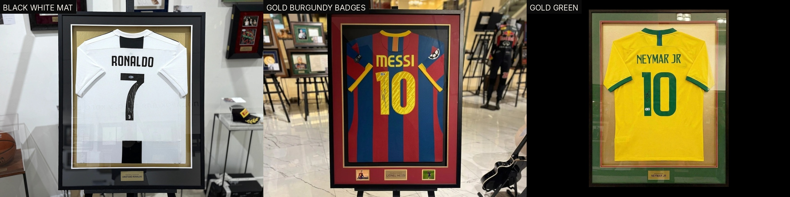
Паспарту берёт клубные цвета: «Барселона» — бордо, сборная Бразилии — зелёный, белая форма — светло-серое. По бокам таблички ставят два шеврона клуба.
Рама
чёрная или золотая, широкое паспарту
Линия
тонкая золотая по периметру окна
Табличка
латунь, по центру нижнего поля
Постеры и афиши
4 формата
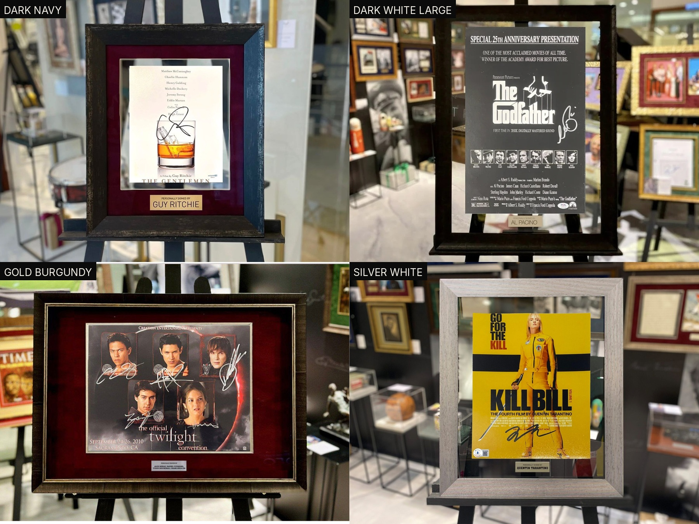
Паспарту подбирается под палитру афиши. Крупный формат допускает белое паспарту без бархата — плакату нужен воздух, а не бархат.
Тёплые афиши
золото + бордо
Современные
серебро + белое
Классика
тёмная рама + белое, крупный формат
Карточки и слабы
3 формата
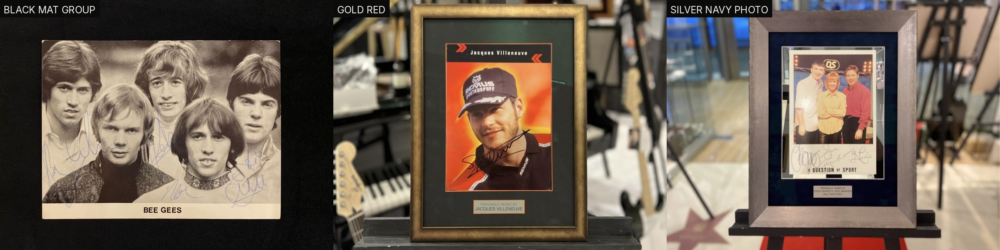
Маленький предмет требует контекста сильнее прочих: к карточке почти всегда добавляют фотографию героя, иначе в раме остаётся пустое поле.
Паспарту
красный или синий бархат
Пара
карточка + фото героя
Группа
чёрное паспарту под коллективный кадр
Книги
2 формата
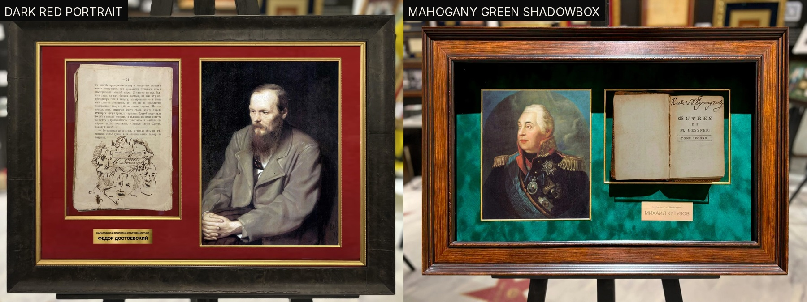
Либо подписанная страница плоско рядом с портретом автора, либо сама книга раскрытой в глубоком боксе. Большинство книг в каталоге сняты «как есть» — рама добавляется под заказ.
Плоско
тёмная рама + красный бархат + портрет
Глубокий бокс
красное дерево + зелёный, книга раскрыта
Табличка
имя автора
Мячи
акриловый куб
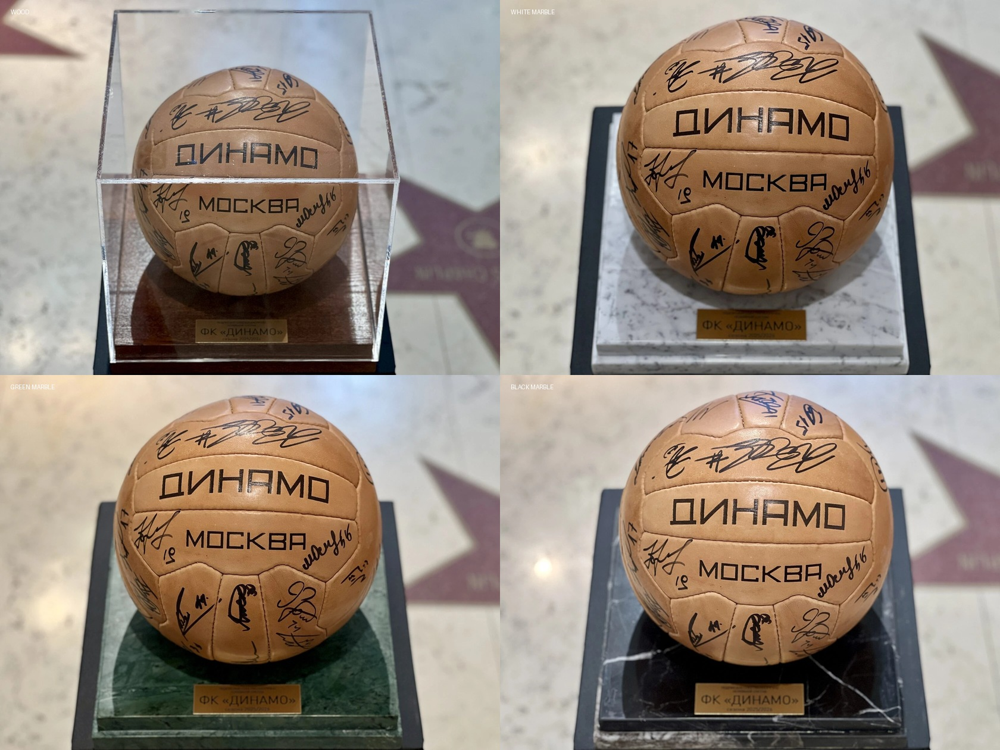
Прозрачный куб на квадратном основании, латунная табличка на передней грани. Куб выше и уже, чем бокс под бутсу: мяч стоит по центру и не касается стенок.
Основания
красное дерево · белый, зелёный, чёрный мрамор
Подбор
винтажная кожа — дерево и зелёный, белый мяч — чёрный мрамор
Табличка
мяч команды — клуб и сезон, а не имя
Бутсы и объёмные вещи
6 оснований
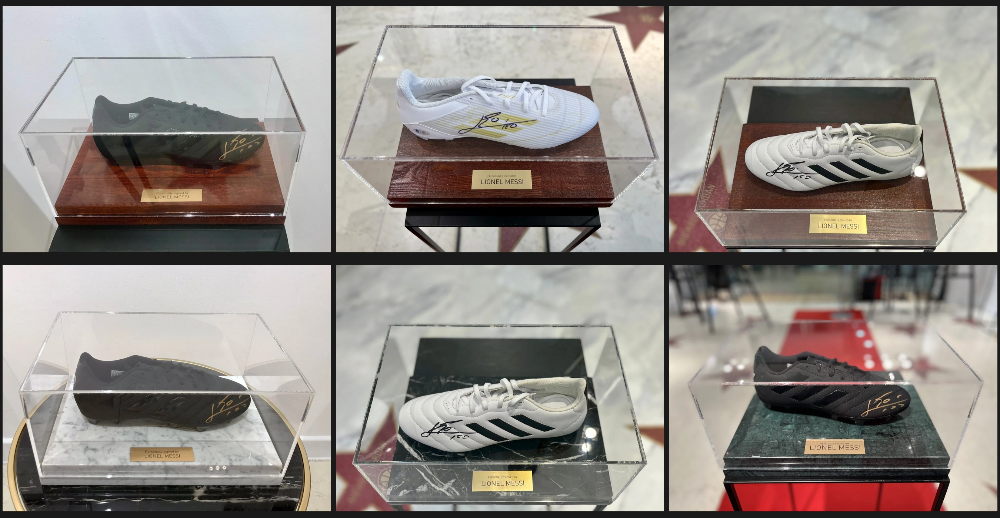
Вытянутый акриловый бокс на каменном или деревянном основании. Основание подбирается под цвет предмета, а не под вид спорта.
Основания
красное дерево ×3 · белый, чёрный, зелёный мрамор
Шайбы
тот же формат, куб меньшего размера
Табличка
PERSONALLY SIGNED BY
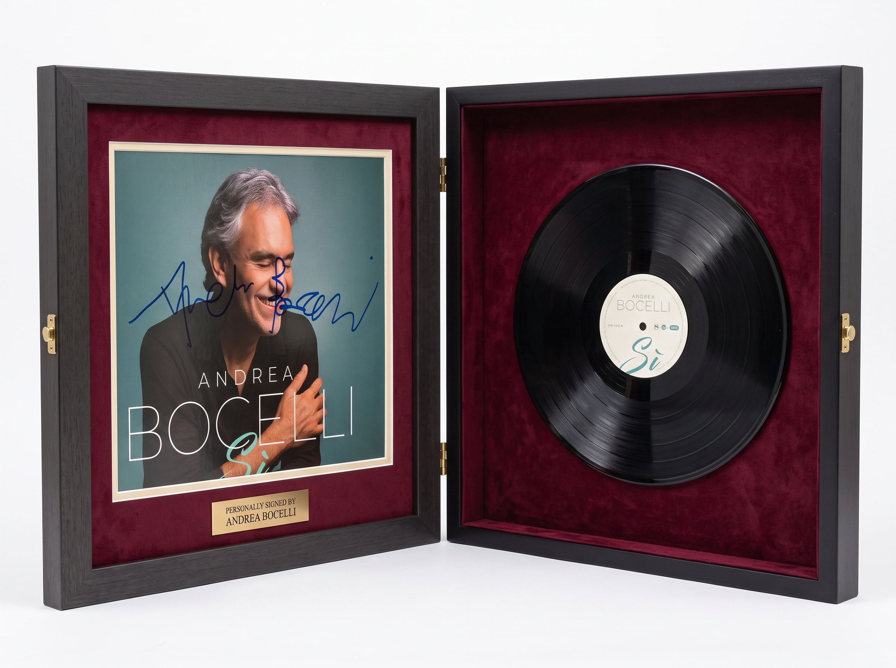
Пример сборки
Раскрывающаяся рама · Андреа Бочелли
Собрано из двух настоящих кадров лота: подписанный конверт и сам диск. Модель получила мастер-лист категории первым референсом, конверт вторым, диск третьим — и сложила их в формат дома.
Макет формата. В клиентский каталог ставим фотографию собранной рамы.
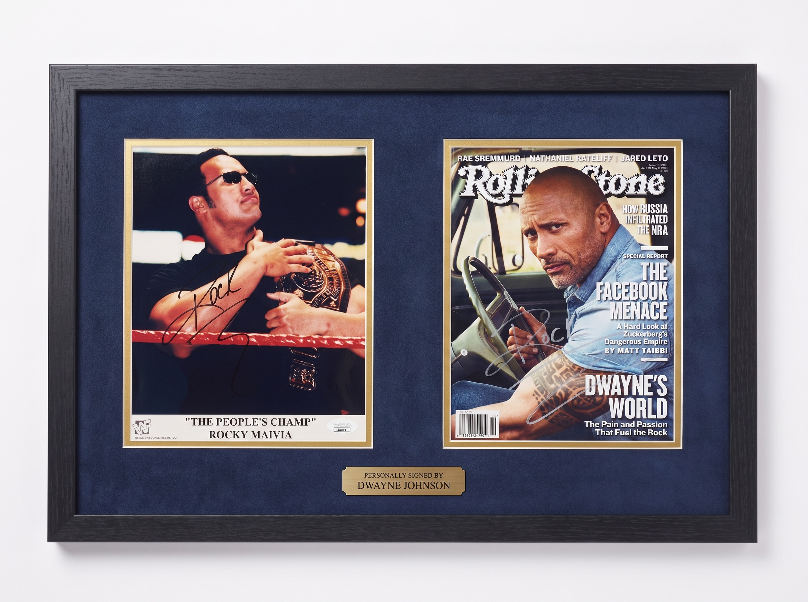
Пример сборки
Обложка и портрет · Дуэйн Джонсон
Экспонат из презентации по Скале: подписанная обложка Rolling Stone. К ней добавлен второй элемент — ринговый кадр эпохи Rocky Maivia. Две эпохи одного человека в одной раме.
Крупные надписи и подписи сохранены точно; мелкий шрифт обложки модель перерисовывает — ещё одна причина показывать клиенту фото готовой рамы.
Новая категория — четыре шага
Отобрать 6–8 готовых лотов категории с сайта и увидеть, чем они отличаются. Сложить мастер-лист с подписями: tools_master_sheet.py. Записать правило в README рядом с картинками. Проверить генерацией на реальном предмете — и только потом считать категорию освоенной.
stargift.ru